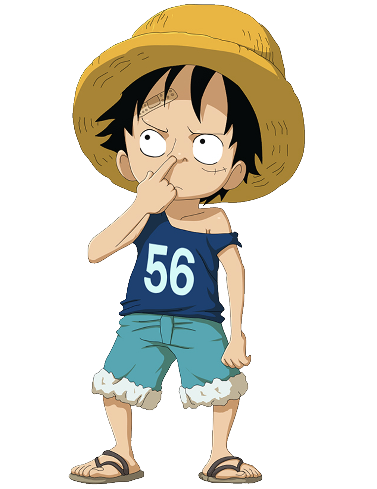
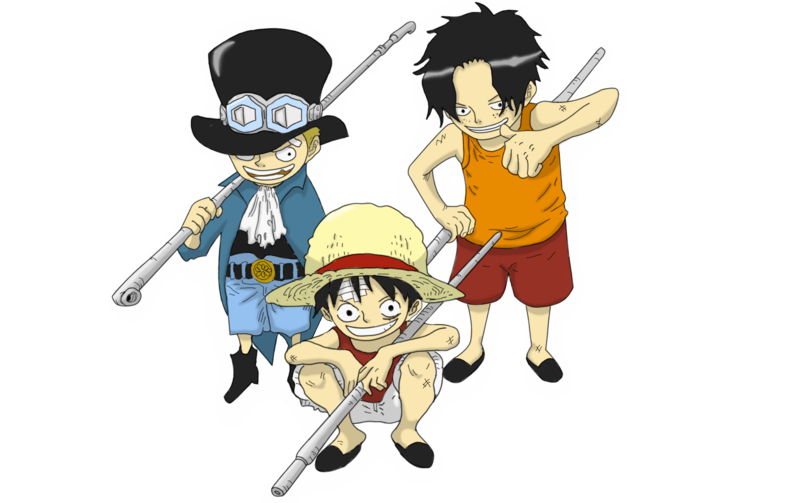
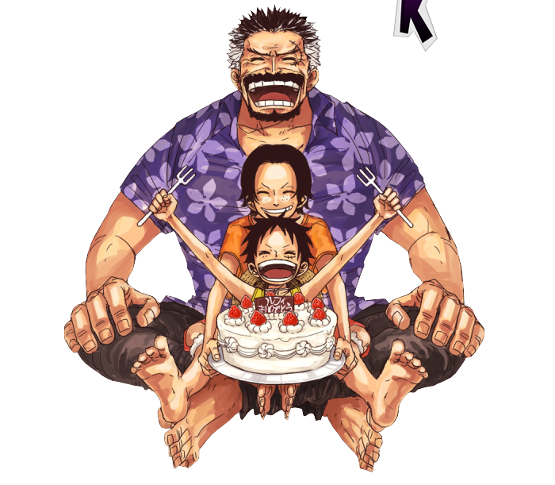

Monkey D. Luffy had an adventurous and eventful early childhood. Here's a summary of his life from 0 to 5 years:
Birth (Year 6XX): Luffy was born in Foosha Village, located on Dawn Island in the East Blue. His father, Monkey D. Dragon, is the leader of the Revolutionary Army, but Luffy was primarily raised by his grandfather, Monkey D. Garp, a Marine Vice Admiral.
Raised by Garp: Garp intended to mold Luffy into a strong Marine. From an early age, Luffy was subjected to intense and often dangerous training to toughen him up, including being left in the wild to survive.
Shanks and the Straw Hat: When Luffy was around 5 years old, he met Red-Haired Shanks and his pirate crew, who visited Foosha Village. Luffy admired Shanks and was inspired to become a pirate after hearing his stories. During this time, Luffy accidentally ate the Gomu Gomu no Mi (a Devil Fruit) from Shanks' treasure, which turned his body into rubber but made him unable to swim.
Shanks' Influence: Shanks and his crew became a huge influence on Luffy's dream of becoming a pirate. In a pivotal moment, Shanks saved Luffy from a sea monster by sacrificing his arm, showing Luffy the true meaning of bravery. Before leaving the village, Shanks gave Luffy his iconic straw hat, asking him to return it when he became a great pirate.

By the age of 5, Luffy had already formed the dream of becoming the Pirate King and set out on a path to assemble his own pirate crew to explore the Grand Line.
6 to 10 Years
These early years significantly shaped Luffy’s character and fueled his dream to become the Pirate King while highlighting the importance of bonds and perseverance in his life.
Moved to Mt. Colubo: Luffy is sent to live with the bandit Curly Dadan on Mt. Colubo by his grandfather, Monkey D. Garp, to "toughen up." He meets Portgas D. Ace, Garp's adoptive grandson, who initially dislikes Luffy.
Sabo: Luffy meets another boy named Sabo, a fellow orphan with dreams of becoming a pirate. Together with Ace, the three form a strong brotherly bond and begin saving money to purchase a pirate ship.
Fighting and Surviving: Luffy undergoes grueling training to survive in the dangerous forests, often fending off wild animals and learning to fight.
Brothers' Bond: Luffy, Ace, and Sabo officially declare themselves brothers by exchanging cups of sake. They develop a strong connection, vowing to follow their dreams and protect each other.
Sabo’s Departure: Sabo, a noble by birth, is forced to leave after his family tracks him down. He tries to escape to the sea, but his ship is attacked by the World Noble. Luffy and Ace believe Sabo died in the attack, which deeply affects them.
Training Intensifies: Luffy continues training with Ace, learning to fight and developing his rubber-based combat techniques.
Determination Grows: Despite the hardship, Luffy’s resolve to become Pirate King becomes unshakeable. He stays with Dadan and the bandits until he is ready to leave for his journey.

11 to 15 Years
Luffy’s teenage years are primarily spent training, waiting for the right moment to begin his journey, and growing mentally strong. He prepares himself to enter the wider world of pirates, determined to achieve his dream of becoming the Pirate King.
Life on Mt. Colubo: Luffy continues to live with Curly Dadan and Ace in the mountains, training and growing stronger. His rubber-based powers from the Gomu Gomu no Mi begin to develop further as he spars with Ace.
Ace’s Influence: Luffy looks up to Ace, who has become a strong fighter by this point. Ace begins to venture out more frequently, pursuing his own goals, while Luffy continues to train in order to one day set sail as a pirate.
Ace Leaves Dawn Island: At the age of 17, Ace sets off on his own pirate journey, leaving Luffy behind. This motivates Luffy to grow even stronger, aiming to one day catch up to Ace. He feels lonely without Ace but also more determined to become the Pirate King.
Solo Adventures: Luffy spends his time training alone in the forests of Mt. Colubo, honing his combat skills, expanding his knowledge of survival, and preparing for his eventual departure.
Preparation for Journey: Luffy remains in Foosha Village, planning his future journey and perfecting his fighting techniques. Though he still lives with Dadan and the bandits, his sights are set on leaving to start his own pirate crew.
Dreams Evolve: Luffy's dreams evolve as he trains, and he develops a deeper understanding of his powers and ambitions. He realizes that his goal is not just to find One Piece, but also to create lasting bonds with his crew.
Setting Sail (Age 17): Just before his 17th birthday, Luffy is ready to leave Foosha Village. He bids farewell to Dadan and sets off on his adventure to become the Pirate King.

16 to 20 Years
Luffy’s late teenage years are marked by significant adventures as he embarks on his quest to become the Pirate King, forming bonds with his crew, facing formidable foes, and evolving into a legendary pirate.
Setting Sail (Age 17): Luffy officially sets sail from Foosha Village, determined to find One Piece and become the Pirate King. He leaves with the ambition to gather a loyal crew and explore the Grand Line.
Recruiting His Crew: He begins gathering his crew, starting with:
Roronoa Zoro: Luffy meets Zoro, a skilled swordsman, and convinces him to join his crew after defeating him in battle.
Nami: Luffy encounters Nami, a talented navigator, and persuades her to join him in exchange for helping her with her own goals.
The Grand Line: Luffy and his crew face numerous challenges as they enter the Grand Line, including battles against other pirates and the Marines.
The East Blue Saga: Luffy's adventures in East Blue help him gather his initial crew members and gain recognition as a rising pirate.
Challenges and Growth: Luffy learns about the complexities of piracy, forming alliances and rivalries while facing powerful foes.
Fight Against the Marines: Luffy's first major confrontation occurs when he clashes with Marine forces, showcasing his determination and will to protect his friends.
Treasure and Friendship: Luffy and his crew search for treasures and face various challenges, reinforcing their friendship and loyalty to each other.
Dreams of Freedom: Luffy’s desire for freedom drives him forward as he confronts powerful enemies and seeks to fulfill his dream of being the Pirate King.
.png)